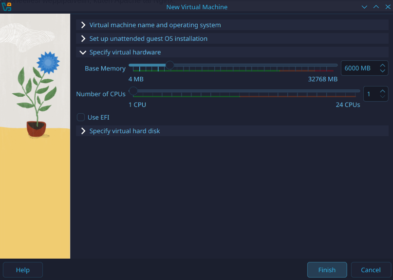
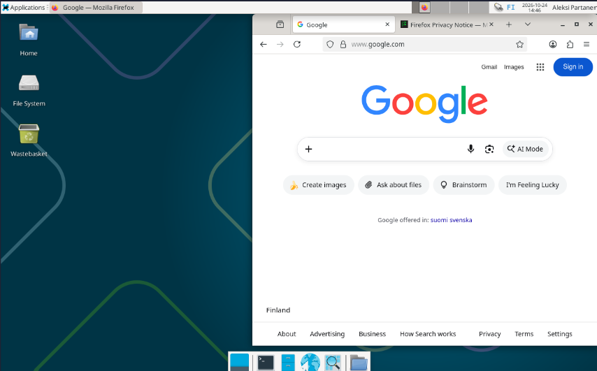
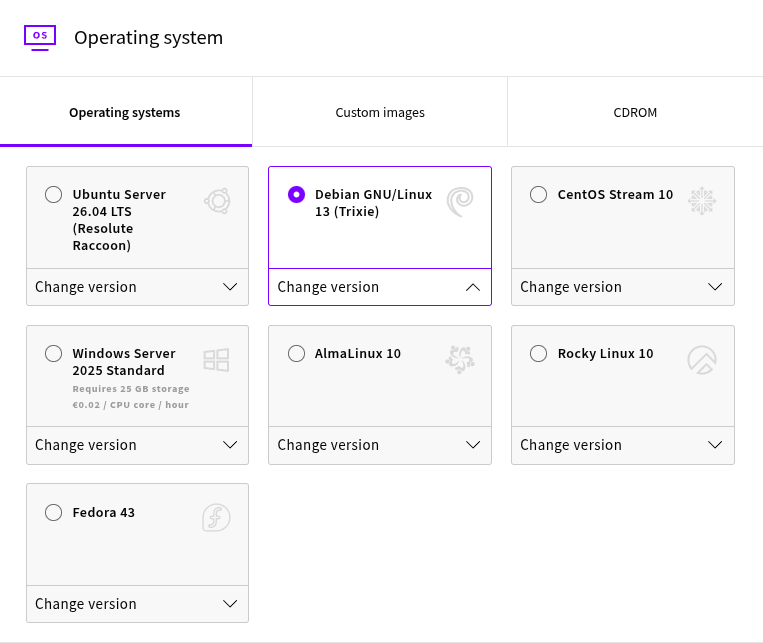
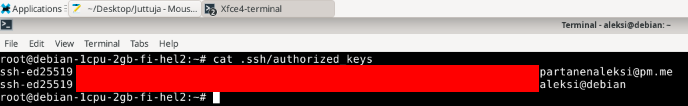
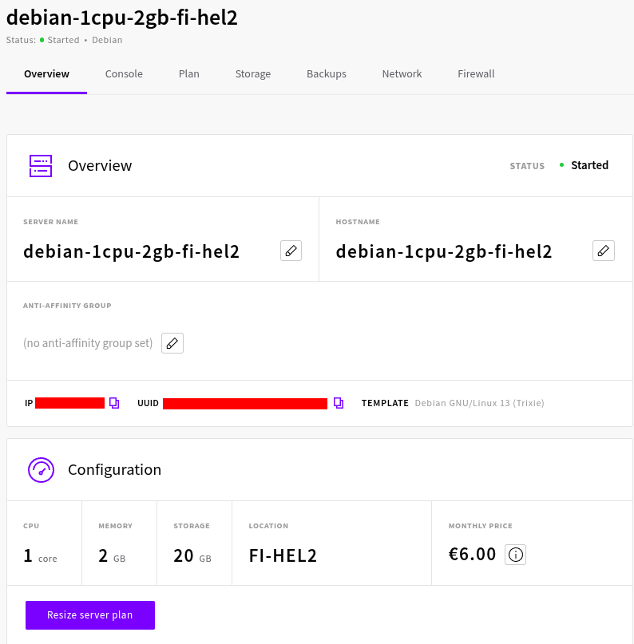
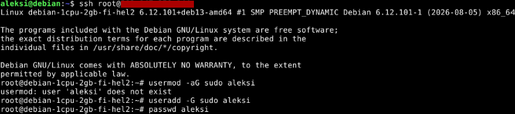
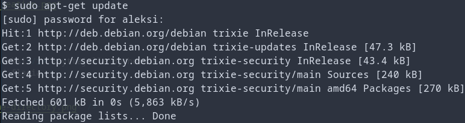
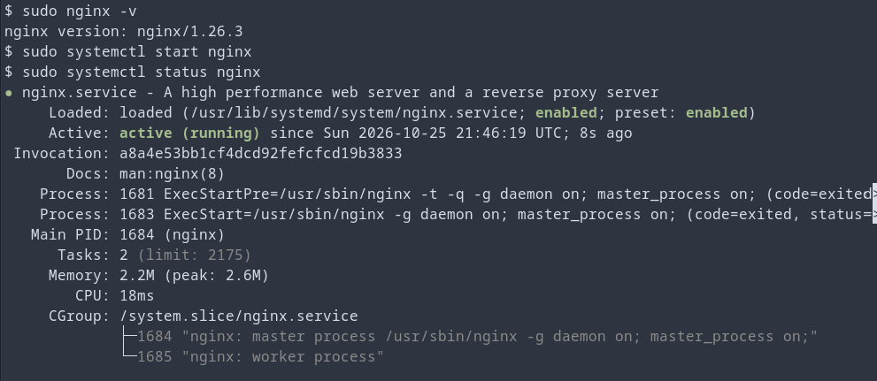
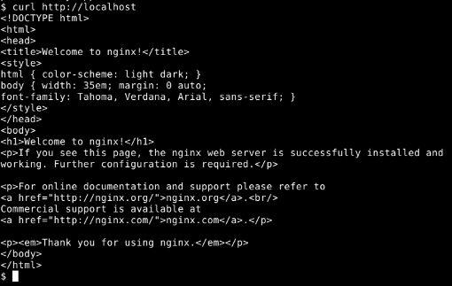

Host laitteisto
- Prosessori: AMD Ryzen 9 5900x 12-Core
- Keskusmuisti: 32GB DDR4
- Näytönohjain: NVIDIA GeForce RTX 3080
- OS: Linux 7.2.11-1-cachyos x86-64
Harjoitus 0: Oikeasti netissä (Karvinen 2026)
x) Tiivistelmä
Niemi 2025: H4 Tehtävät (Niemi 2025)
- Tehtävässä valittiin VPS
- Niemi valitsi VPSn UpCloudelta
- Lopuksi palvelimella tehtiin etäyhteyden avulla uusi sudo käyttäjä, asennettiin palomuuri sekä web palvelin
Partanen 2025: Harjoitus 5: Nimekäs: a) Nimi (Partanen 2025)
- Tehtävässä ostetaan/otetaan käyttöön domain nimi
- Domain nimi haettiin Namecheap palvelusta
- Domain privacy otettiin ilmaiseksi käyttöön
- Domain nimi laitettiin osoittamaan VPS:ään
a) Paikallista
Asennetaan Debian 13 paikalliselle koneelle virtuaalikoneeksi. Käytän Oraclen VirtualBoxia. Käytän Debain (64-bit) versiota, koska 32-bit versio ei koneellani toimi. Asetin musitiksi 6000 MB ja muuten pidin oletus asetukset päällä.


Virtuaalikone saatiin tehtyä. Nyt onkin sitten vuorossa Debianin asennus virtuaalikoneelle. Aloitan asennuksen valitsemalla Start installer. Asennuksen aikana valitsin kieleksi English, lokaatioksi Finland ja koska en löytänyt Suomea paikallisasennuksista, valitsin paikallisasetukseksi United Kingdom. Näppäimistöksi valitsin Finnish. Asetin root-käyttäjän salasanan sekä tein aleksi käyttäjän. Kovalevyt asensin oletus valinnoilla. GRUB loaderin asensin ainoalle kovalevylle.

Asennus onnistui ja Debian toimii normaalisti. Lisäsin aleksi käyttäjän sudoers ryhmään. Päivitin Debianin komennolla sudo apt-get update. Latasin myös tree, ssh ja vim, jotta työskentely helpottuu tulevaisuudessa. Asensin myös Guest Additionit (Karvinen 2021), että kopiointi host koneen ja virtuaalikoneen välillä onnistuu, ja että virtuaalikoneen työpöydän resoluutio on suurempi.

b) VPS
Vuokrataan virtuaalinen yksityispalvelin. Aion käyttää UpCloudia tällä kertaa, koska Linux palvelimet kurssilla käytin Linode palvelua.
Aloitetaan tekemällä tunnukset Upcloud palveluun. Se onnistui helposti ja pankkikortti piti liittää tiliin. Sain 500 euroa käyttöön ensimmäiseksi kuukaudeksi jotta pääsen kokeilemaan asioita. Haluan kuitenkin ottaa käyttöön vain sellaisen VPS palvelun, joka ei ole hirveän kallis ja riittää kurssin käyttötarpeeseen. Päätin valita Upcloudin 1cpu/2GB ram/20GB version, joka maksaa 6e kuukaudessa. Todennäköisesti 3e versiokin olisi riittänyt ja mietin myös premium puolen 5e/kk versiota.

Käyttöjärjestelmäksi valitsin Debian 13 version, jota käytetään kurssilla.

Sisäänkirjautumis metodiksi valitsin SSH avaimella kirjautumisen ja lisäsinkin host koneen julkisen avaimen palvelimelle palvelimen teon yhteydessä. Myöhemmin lisäsin vielä virtuaalikoneen SSH avaimen myös Upcloudin VPS palvelimelle.


Tässä näkyy lopputulos kun palvelin on päällä ja yhteys saatu host koneelta siihen.


c) Alkutoimet
Tehdään sudo käyttäjä virtuaali palvelimelle. Teen nämä asiat ottamalla yhteyttä omalla koneella olevaltani virtuaalikoneelta. Tein aleksi käyttäjän root käyttäjällä virtuaali palvelimelle.

Jouduin tekemään kotihakemiston aleksi käyttäjälle myöhemmin, koska käyttäjää luodessa käyttänyt -d flagia.

Kopioin vielä ssh avaimet root käyttäjältä aleksi käyttäjälle, jotta voin jatkossa ottaa yhteyden myös aleksi käyttäjälle koneiltani. Tiedoston omistajaksi piti vielä muokata chmod komennolla aleksi käyttäjä. Tämän jälkeen ssh yhteys toimii myös aleksi käyttäjälle.
Päivitetään tässä vaiheessa ohjelmat ja asennetaan palomuuri (ufw). Palomuuriin tehdään reikä ssh:lle porttiin 22, jonka jälkeen laitetaan palomuuri päälle. Aiemmasta kokemuksesta muistan ettei palomuuria kannata laittaa päälle ennenkuin portti 22 on aukaistu.


d) Weppipalvelin
Asennetaan Nginx. Se onnistuukin helposti komennolla sudo apt-get install nginx. Sen jälkeen voidaankin varkistaa nginx tila komennolla sudo systemctl status nginx. Nginx taisikin olla jo asentamisen jälkeen automaattisesti päällä eikä start komentoa olisi tarvinnut antaa.

Nyt voimme myös testata näkyykö nginx oletus webbisivu osoitteessa http://localhost:80, ja näkyyhän se.

Lähteet
- Niemi, Aatu 2025. H4 Tehtävät. Luettavissa: https://github.com/AONCODES/linux-course/blob/main/h4.md. Luettu: 23.10.2026
- Partanen, Aleksi 2025. Harjoitus 5: Nimekäs: a) Nimi. Luettavissa: https://partanennn.github.io/linux-servers/practices/fifth-week.html. Luettu: 23.10.2026
- Karvinen, Tero 2021. Install Debian on Virtualbox. Luettavissa: https://terokarvinen.com/2021/install-debian-on-virtualbox/. Luettu: 25.10.2026
- Karvinen, Tero 2026. h0 Oikeasti netissä. Luettavissa: https://terokarvinen.com/palvelinten-hallinta/#h0-oikeasti-netissa. Luettu: 25.10.2026
Tehtävänanto
- x) Lue ja tiivistä. (Tässä x-alakohdassa ei tarvitse tehdä testejä tietokoneella, vain lukeminen tai kuunteleminen ja tiivistelmä riittää. Tiivistämiseen riittää muutama ranskalainen viiva. Ei siis vaadita pitkää eikä essee-muotoista tiivistelmää. Lisää kuhunkin jokin oma kysymys tai huomio. Paljon komentoja sisältävistä dokumenteista kannattaa nostaa mukaan keskeiset komennot ja valinnat. Sisältöä, ei vain metatekstiä tai kuvailua.) Niemi 2025: H4 Tehtävät Partanen 2025: Harjoitus 5: Nimekäs: a) Nimi (Vain a-kohta.)
- a) Paikallista. Asenna Debian 13 paikallisesti virtuaalikoneeseen. Voit käyttää esimerkiksi VirtualBoxia. (Tätä käytetään myös tuntiharjoituksiin.)
- b) VPS. Vuokraa virtuaalinen yksityispalvelin.
- c) Alkutoimet. Tee virtuaalipalvelimellesi sudo-käyttäjä omalla nimellä (ei root). Asenna tulimuuri - ensin reikä ssh:lle. Päivitä kaikki ohjelmat ja boottaa tarvittaessa.
- d) Weppipalvelin. Asenna koneellesi weppipalvelin, kuten Apache tai Nginx.
- e) Vapaaehtoinen: Nimi. Aseta domain-nimi osoittamaan palvelimesi IP-osoitteeseen. (Tämä tehtävä saattaa myöhemmin tulla varsinaiseksi tehtäväksi)